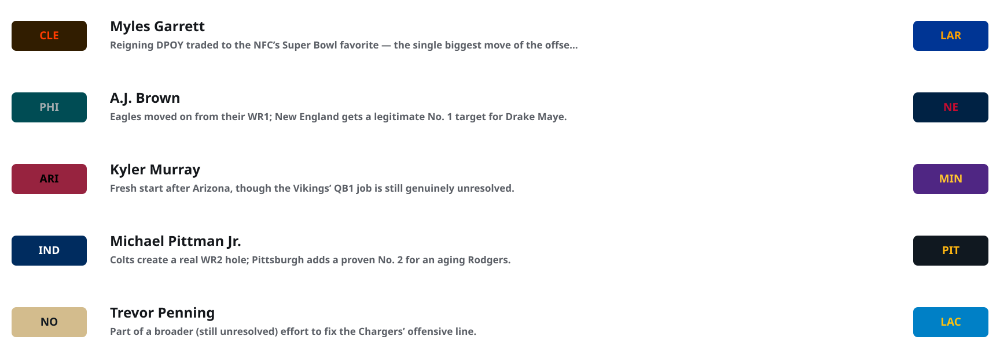
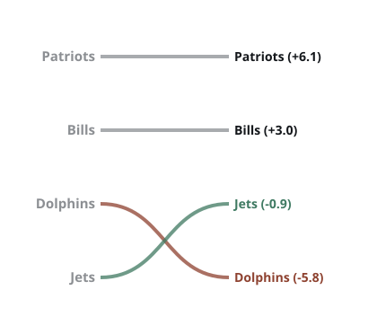
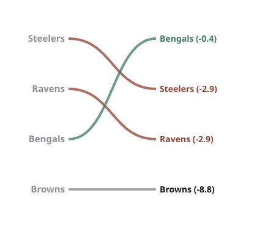
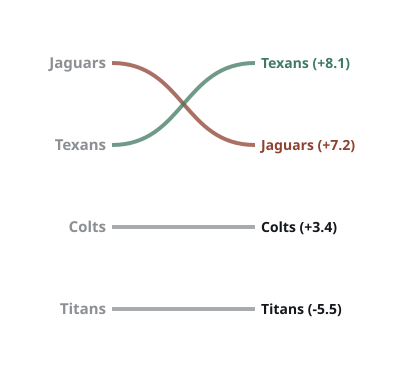
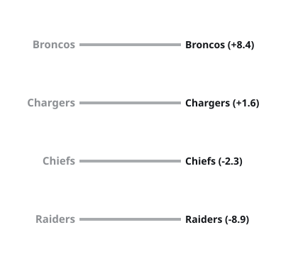
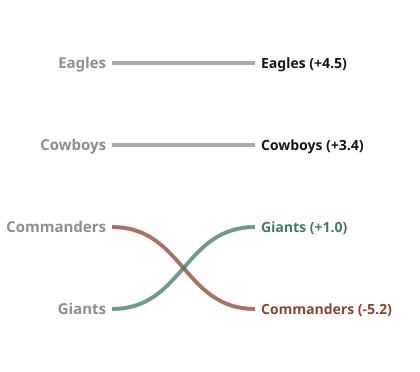
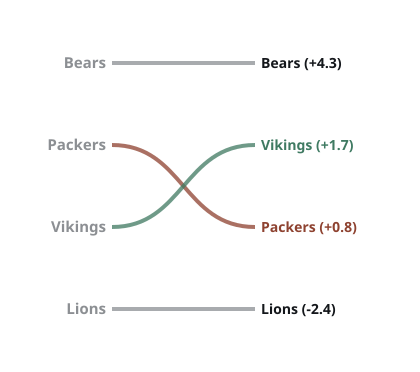
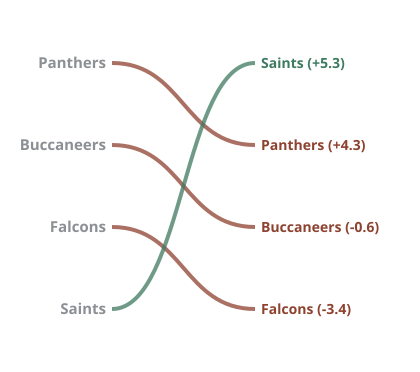
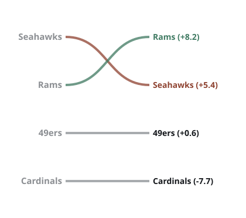
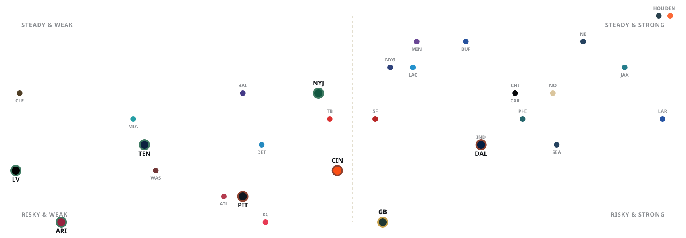

Coaching carousel, QB rooms, rookie impact, and a from-scratch prediction model.
Every prediction here comes from one number per team, the Power Score — built from three pieces: Baseline (last year's record), Trajectory (a hand-scored read on roster needs, coaching continuity, and off-field stability), and Regression (a check on whether a team's record matched how good their point differential said they actually were).
Every team also gets a Cone of Certainty — a projected win-total range, not just a single guess — and every division gets a Confidence Rating for how close the race at the top actually is.
Full formulas and sources are in the Methodology & Sources section at the bottom. The NFL dashboard also has a glossary covering every term used there in more depth.
Half the league made a change at HC, OC, or DC — tied for the most head-coaching turnover in a single offseason ever.
Ravens, Giants, Bills, Browns, Steelers, Titans, Dolphins, Raiders
Falcons, Cardinals, Chargers, Commanders
Seahawks, Lions, Chiefs, Cowboys
Eagles, Bears, Packers, Vikings, Rams, 49ers, Bengals, Texans, Colts, Jaguars, Patriots, Jets, Buccaneers, Panthers, Saints, Broncos
All 10 new head coaches this cycle. Left badge is the coach's previous stop, right badge is the new team.
Tied for highest QB turnover in league history entering a season.
The most chaotic QB room in the league entering training camp — no presumed favorite among four real options.
Clemson. 72 regular-season starts, three-time Pro Bowler. Recovering from a ruptured Achilles — no 2025 regular-season snaps logged.
Superpower: playoff-tested arm talent and mobility when healthy.
Weakness: extensive injury history — availability is the real question, not talent.
Colorado. 2025 draft: Round 5, Pick 144. 120/212, 1,400 yds, 7 TD, 10 INT, 3-4 as a starter, 18.8 QBR (ESPN's 0–100 quarterback rating — above 50 is roughly average).
Superpower: deep-ball accuracy and big-play ability — four 50+-yard completions in his first three starts.
Weakness: turnover-prone; holds the ball too long against NFL pass rush.
Oregon. 2025 draft: Round 3, Pick 94; FBS all-time leader in total TDs (189). 110/185, 937 yds, 7 TD, 2 INT, 1-5 as a starter, 80.8 rating.
Superpower: ball security — lowest INT rate of the three; most career starts in FBS history.
Weakness: lacks downfield explosiveness — among the league's lowest EPA/dropback in 2025 (a per-play efficiency stat — higher is better).
Arkansas (transfer from Boise State). 2026 draft: Round 6, Pick 182. 2025 college: 2,714 yds, 19 TD, 11 INT — broke NFL Combine vertical & broad jump records at 6'6"/224.
Superpower: elite size, arm talent, and athleticism — rare physical upside for the position.
Weakness: raw decision-making and operational polish — graded a Day 3 developmental project.
| Player | Team | Draft | Note |
|---|---|---|---|
| Fernando Mendoza | Raiders | 2026, No. 1 overall | Behind Cousins; expected to take over mid-season |
| Carson Beck | Cardinals | 2026, ~65th overall | Behind Brissett; real chance he plays in 2026 |
| Shedeur Sanders | Browns | 2025, 5th round | In the thick of the QB1 competition now |
| Dillon Gabriel | Browns | 2025, 3rd round | Also in the mix, third in the pecking order |
| Taylen Green | Browns | 2026, 6th round | Developmental dual-threat, long shot for 2026 |
| Will Howard | Steelers | 2025, 6th round | Bridge/depth behind Rodgers |
| Drew Allar | Steelers | 2026, 3rd round | Developmental, buried on the depth chart |
Plug-and-play starter, DROY buzz
No. 3 overall, immediate lead-back role
No. 4 overall, clear WR1 path
Top-10 pick, immediate starter
Steps into the vacated lead role
Centerpiece of the defensive rebuild
First-round starter behind Geno Smith
First-round receiver, immediate role
First-round line starter
Immediate line starter
New top target for Tyler Shough
Part of the total defensive rebuild
The five moves that mattered most this offseason — player, origin team, and destination.

Five situations carrying real, sourced medical status into training camp — not soft narrative, actual reported updates already baked into the model.
Mahomes tore his ACL + LCL in Week 15. Week 1 2026 availability is genuinely uncertain despite ahead-of-schedule rehab reports — KC added Kenneth Walker III to reduce pressure on his return.
Parsons' ACL + meniscus recovery is now reported to likely cost him much of the regular season — not cleared for practice until September, targeting a postseason return.
S Kerby Joseph's status is "team does not know when or if he will return" per HC Dan Campbell — worse than a recovery-timeline question.
RB Zach Charbonnet's ACL recovery could cost him the start of the season — newly reported, not previously priced in.
WR Alec Pierce's ankle surgery carries a 4-6 month recovery that could cost him the preseason and part of the regular season.
| Division | 1st | 2nd | 3rd | 4th |
|---|---|---|---|---|
| AFC East | Patriots 14-3 | Bills 12-5 | Dolphins 7-10 | Jets 3-14 |
| AFC North | Steelers 10-7 | Ravens 8-9 | Bengals 6-11 | Browns 5-12 |
| AFC South | Jaguars 13-4 | Texans 12-5 | Colts 8-9 | Titans 3-14 |
| AFC West | Broncos 14-3 | Chargers 11-6 | Chiefs 6-11 | Raiders 3-14 |
| NFC East | Eagles 11-6 | Cowboys 7-9-1 | Commanders 5-12 | Giants 4-13 |
| NFC North | Bears 11-6 | Packers 9-7-1 | Vikings 9-8 | Lions 9-8 |
| NFC South | Panthers 8-9 | Buccaneers 8-9 | Falcons 8-9 | Saints 6-11 |
| NFC West | Seahawks 14-3 | Rams 12-5 | 49ers 12-5 | Cardinals 3-14 |
Source: Pro-Football-Reference.com, 2025 NFL Standings & Team Stats.
Left = 2025 final standings order. Right = 2026 predicted rank (Power Score). Green = predicted to rise, red = predicted to fall.








| Division | Leader | Runner-up | Gap (1v2) | Rating |
|---|---|---|---|---|
| AFC East | Patriots | Bills | 3.1 | Medium |
| AFC North | Bengals | Steelers | 2.5 | Medium |
| AFC South | Texans | Jaguars | 0.9 | Low |
| AFC West | Broncos | Chargers | 6.8 | High |
| NFC East | Eagles | Cowboys | 1.1 | Low |
| NFC North | Bears | Vikings | 2.6 | Medium |
| NFC South | Saints | Panthers | 1.0 | Low |
| NFC West | Rams | Seahawks | 2.8 | Medium |
Confidence = gap between the #1 and #2 team's Power Score, minus their average Volatility ÷ 6. (Volatility = a team's Upside score plus its Downside score added together — how wide its total range of outcomes is, regardless of direction.)
Power Score ± Upside/Downside range.
| Division | #1 | Range | #2 | Range | #3 | Range | #4 | Range |
|---|---|---|---|---|---|---|---|---|
| AFC East | Patriots | +6.1 | Bills | +3.0 | Jets | -0.9 | Dolphins | -5.8 |
| AFC North | Bengals | -0.4 | Steelers | -2.9 | Ravens | -2.9 | Browns | -8.8 |
| AFC South | Texans | +8.1 | Jaguars | +7.2 | Colts | +3.4 | Titans | -5.5 |
| AFC West | Broncos | +8.4 | Chargers | +1.6 | Chiefs | -2.3 | Raiders | -8.9 |
| NFC East | Eagles | +4.5 | Cowboys | +3.4 | Giants | +1.0 | Commanders | -5.2 |
| NFC North | Bears | +4.3 | Vikings | +1.7 | Packers | +0.8 | Lions | -2.4 |
| NFC South | Saints | +5.3 | Panthers | +4.3 | Buccaneers | -0.6 | Falcons | -3.4 |
| NFC West | Rams | +8.2 | Seahawks | +5.4 | 49ers | +0.6 | Cardinals | -7.7 |
Ranked by model-projected 2026 wins. Range shown is the model's confidence band, not a hard floor/ceiling.
Full 1–32 order for every team is in the Composite Power Ranking table below.
X = Power Score (prediction). Y = Consistency (inverse of Upside + Downside range — higher means a narrower total range of outcomes; this is a different quantity from the "Stability" sub-score inside Trajectory). Ringed dots are the judgment calls below.

Vulnerable Leader = ranked 1st/2nd with Downside ≥ 7. Sneaky Riser = ranked 3rd/4th with Upside ≥ 6.
AFC North, #1. Downside 7 — the division lead runs through Burrow's own recent injury history plus Erick All's unresolved ACL.
AFC North, #2. Downside 8 — the highest in the league. This ranking assumes a 42-year-old Rodgers holds up for a full season.
NFC East, #2. Downside 9, 2nd-highest in the league. Dallas's rise depends on Overshown fully recovering from a severe multi-ligament knee injury.
NFC North, now #3. Not a "vulnerable" lead anymore — Parsons is now reported likely to miss much of the season, and it already cost Green Bay 2nd place in the division.
AFC South, #4. Upside 7 — the only team with two players on the national All-Breakout Team (Ward, Helm).
AFC West, #4. Upside 7 — Ashton Jeanty is a real regression-to-the-mean case, independent of the scheme change.
NFC West, #4. Upside 7, Downside 7 — the widest total range in the league. Boom-or-bust, not just a bad team.
AFC East, #3. Upside 6 — T'Vondre Sweat has real breakout DT tools on a team already showing more life than its record.
11.6 projected wins — not just a strong Power Score, but the easiest schedule in the league (SOS -1.41).
SOS +2.08 and +2.03 respectively — stacked on already-bad Power Scores, that's why they land near the bottom of projected wins even relative to teams with similar Power Scores.
Synthesized from ESPN FPI, Yahoo Sports, Sharp Football Analysis, and PhillyVoice preseason rankings — directional, not a single outlet's number.
| Rank | Team | Rank | Team | Rank | Team | Rank | Team |
|---|---|---|---|---|---|---|---|
| 1 | Rams | 9 | Ravens | 17 | Bengals | 25 | Giants |
| 2 | Seahawks | 10 | Eagles | 18 | Commanders | 26 | Falcons |
| 3 | Bills | 11 | Cowboys | 19 | Vikings | 27 | Raiders |
| 4 | Broncos | 12 | Bears | 20 | Steelers | 28 | Titans |
| 5 | Patriots | 13 | Lions | 21 | Colts | 29 | Browns |
| 6 | Chargers | 14 | Texans | 22 | Buccaneers | 30 | Cardinals |
| 7 | 49ers | 15 | Packers | 23 | Panthers | 31 | Jets |
| 8 | Chiefs | 16 | Jaguars | 24 | Saints | 32 | Dolphins |
The Jets closed real ground on a productive offseason — just not enough to pass the top two yet.
Bengals and Steelers are separated by less than a point — and both division leaders carry real injury risk.
Texans vs. Jaguars is a literal coin flip — 0.9 points apart with real continuity on both sides.
Broncos have no real competition. Chiefs' picture got materially worse this week — Mahomes' Week 1 status is genuinely uncertain.
Eagles survive losing a superstar — barely. The cushion over Dallas is down to 1.1 points.
Packers fell behind Vikings this week — Parsons' recovery is now reported to likely cost him much of the season. Lions' secondary situation got worse too.
The Saints aren't a dark horse anymore — they're the favorite. Panthers' division win last year ran hotter than their point differential earned.
Rams are the best team in football. Cardinals have the widest range of outcomes in the league.
Stefon Diggs, Deebo Samuel, Jadeveon Clowney, and Joey Bosa all remain unsigned as camp approaches.
Standoff with Tampa Bay could still get done before the soft deadline of training camp.
He's said 2026 will be his last ride — but the football world isn't fully convinced.
Trade saga remains unresolved and contentious — voided guarantees, no resolution yet.
Kansas City's slot weapon carries real suspension risk for off-field conduct.
Browns and Cardinals QBs are streaming risks at best — no clarity into Week 1, let alone a full season.
Bengals, Titans (Cam Ward), and Saints (Tyler Shough) all scored well in our model — more offensive volume likely follows.
Jeremiyah Love (Cardinals) and Jadarian Price (Seahawks) both step into legitimate lead-back opportunities as Day 1 starters.
Scouts flag his rookie efficiency as unlucky, not unskilled — a buy-low breakout candidate in Year 2.
Offensive line question marks (a real Need-Fill hole in our model) make this a lower-confidence RB room league-wide.
Tied A.J. Brown's rookie efficiency record; DJ Moore's departure opens real target share.
Fresh landing spot in New England after the Eagles trade — a full offense built around him now.
Drafted 8th overall to pair with Olave in an ascending, model-favorite offense.
Real "discount Kittle" breakout case per scouts — an every-down complete tight end.
Best positioned for outside-WR snaps behind Egbuka — injury history is the real risk, not talent.
This section is directional, built from research already gathered for the model — storylines worth watching, not fantasy advice or a ranked draft board.
Need-Fill + Scheme Continuity + Stability(2025 Wins − 8.5) × 2−(Actual Wins − Pythagorean Expected Wins) × 3(0.45 × Baseline) + (0.35 × Trajectory) + (0.20 × Regression)Power Score ± (Upside/Downside, scored 0–10 each)Gap(#1 vs #2) − Avg. Volatility(#1,#2) ÷ 6Full model — all 32 teams, every formula live and adjustable — is in the companion Excel workbook.
Model built and scored mid-July 2026, before training camp battles, preseason games, or further roster moves. A snapshot, not a live feed.